Wild plants you can forage in Australia
75 wild greens, berries, nuts, roots and flowers, with when each is in season, where it grows, how to harvest it and what to cook.
Greens
 ChickweedMay–Oct
ChickweedMay–Oct Common mallowSep–Apr
Common mallowSep–Apr DandelionMay–Oct
DandelionMay–Oct Munyeroo · PurslaneOct–Apr
Munyeroo · PurslaneOct–Apr Old man saltbushAll year
Old man saltbushAll year SamphireSep–Mar
SamphireSep–Mar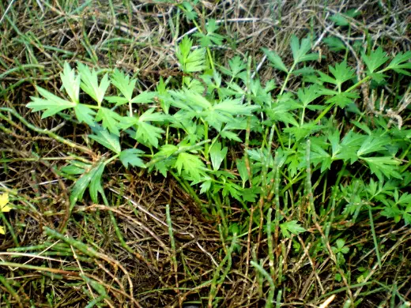
Sea celeryAll year Sea lettuceAll year
Sea lettuceAll year Stinging nettleAug–Nov
Stinging nettleAug–Nov Three-cornered leekJun–Oct
Three-cornered leekJun–Oct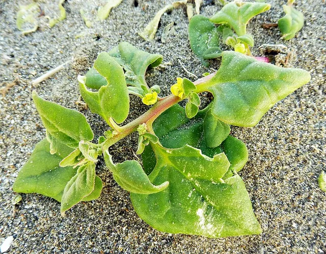
Warrigal greensSep–Apr Wild fennelAug–Dec
Wild fennelAug–Dec
Fruit & berries
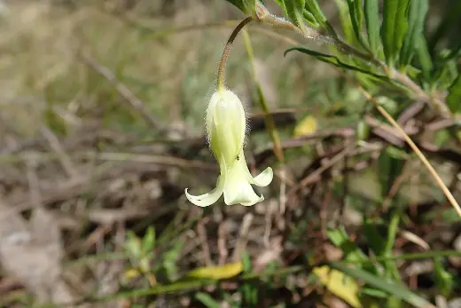
Apple berryDec–Mar BlackberryJan–Mar
BlackberryJan–Mar Blue quandongMay–Nov
Blue quandongMay–Nov BoabApr–Sep
BoabApr–Sep Burdekin plumApr–Aug
Burdekin plumApr–Aug Bush bananaApr–Sep
Bush bananaApr–Sep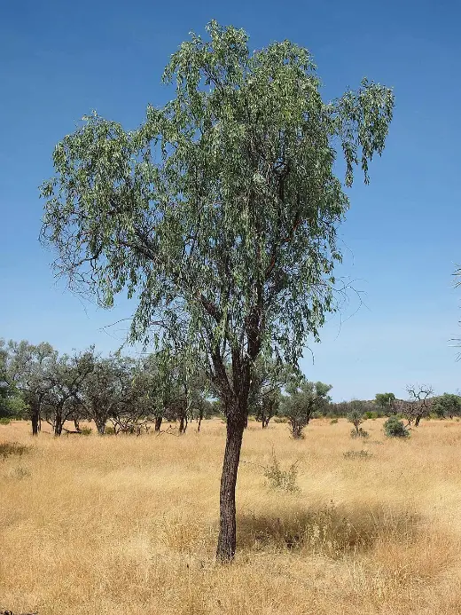
Bush plumSep–Dec Cherry plumDec–Jan
Cherry plumDec–Jan Cluster figAll year
Cluster figAll year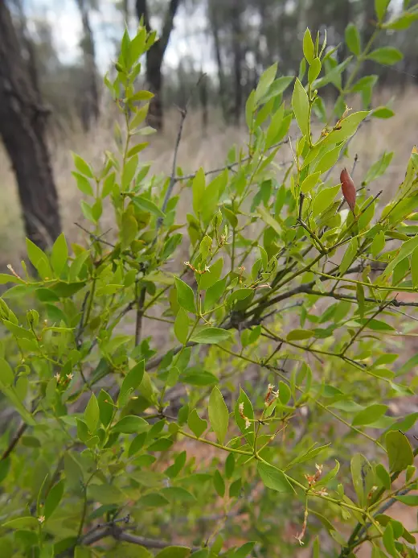
ConkerberryNov–Feb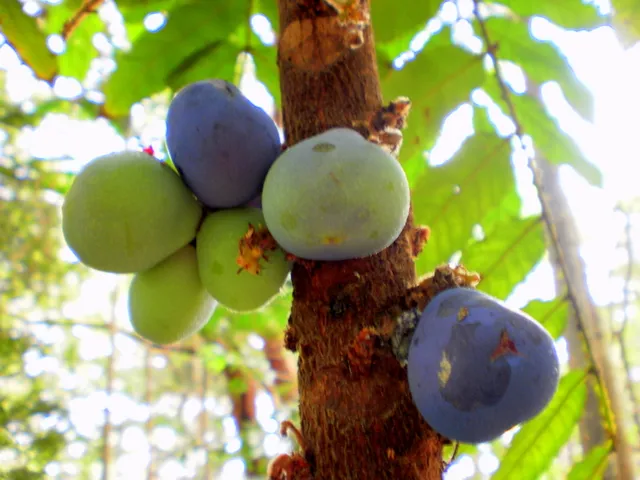
Davidson's plumNov–Feb Desert limeNov–Jan
Desert limeNov–Jan Desert raisinApr–Jul
Desert raisinApr–Jul Feral oliveApr–Jun
Feral oliveApr–Jun Finger limeDec–May
Finger limeDec–May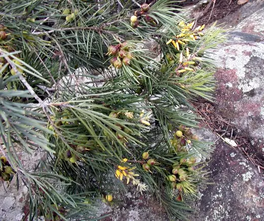
GeebungJan–Apr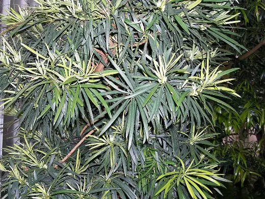
Illawarra plumMar–Jul Kakadu plumMar–Jun
Kakadu plumMar–Jun Lemon aspenJan–Apr
Lemon aspenJan–Apr Lilly pillyFeb–Jun
Lilly pillyFeb–Jun Magenta lilly pillyMar–Jun
Magenta lilly pillyMar–Jun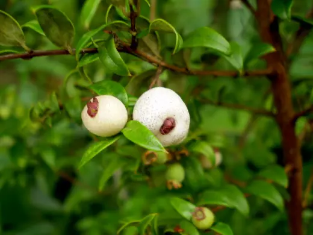
Midyim berryJan–Apr Mountain pepperMar–May
Mountain pepperMar–May MuntriesJan–Mar
MuntriesJan–Mar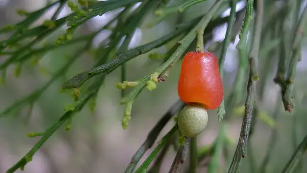
Native cherryNov–Feb Native currantDec–Mar
Native currantDec–Mar Native gingerJan–May
Native gingerJan–May Native mulberryAll year
Native mulberryAll year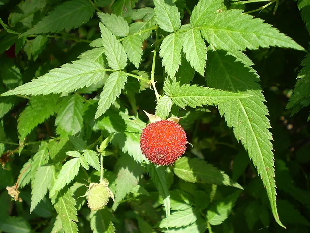
Native raspberrySep–Dec Native tamarindNov–Jan
Native tamarindNov–Jan PigfaceDec–Mar
PigfaceDec–Mar Prickly pearJan–Apr
Prickly pearJan–Apr QuandongSep–Dec
QuandongSep–Dec RiberryDec–Feb
RiberryDec–Feb Rose hipsMar–Jun
Rose hipsMar–Jun Ruby saltbushAll year
Ruby saltbushAll year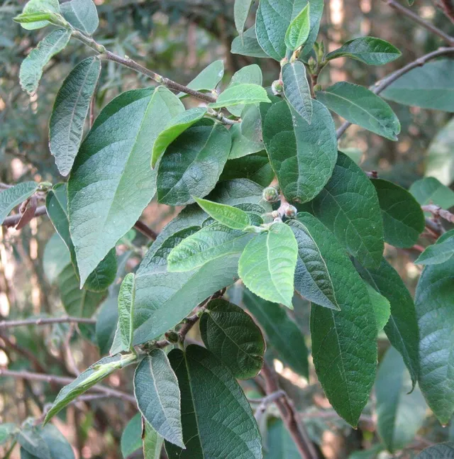
Sandpaper figDec–Mar Wild orangeNov–Mar
Wild orangeNov–Mar
Roots & shoots
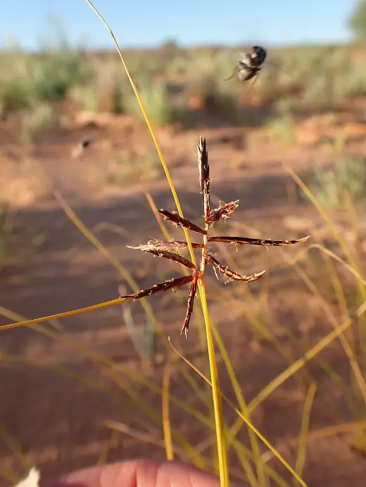
Bush onionMar–Sep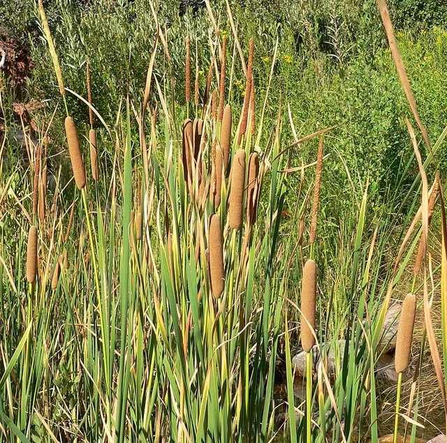
CumbungiSep–Dec Long yamApr–Sep
Long yamApr–Sep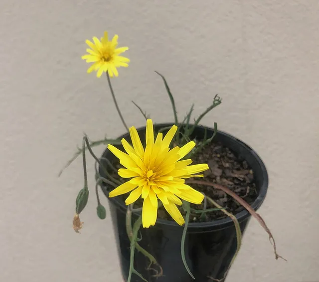
Yam daisyMay–Aug
Seeds & grains
Protein
 AbaloneAll year
AbaloneAll year MusselsApr–Oct
MusselsApr–Oct PipisMay–Sep
PipisMay–Sep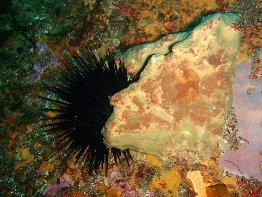
Purple sea urchinAll year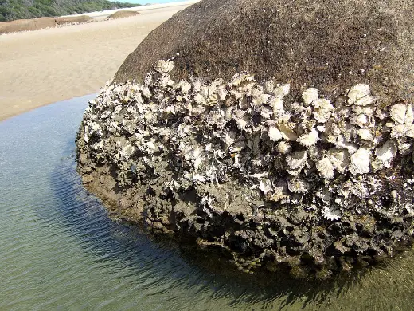
Sydney rock oystersMay–Sep Witchetty grubAll year
Witchetty grubAll year
Nuts
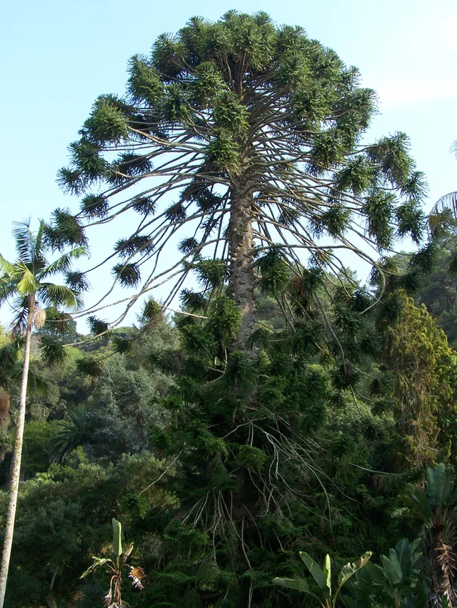
Bunya nutJan–Mar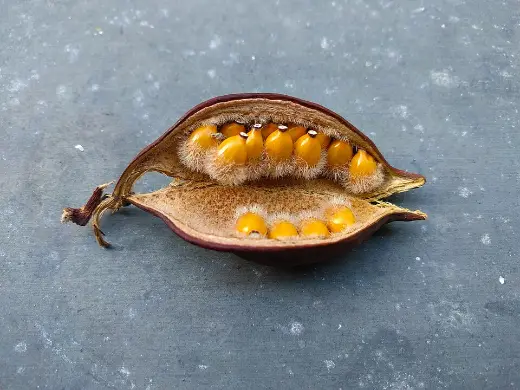
Kurrajong seedsMar–Jun MacadamiaMar–Aug
MacadamiaMar–Aug Pandanus nutsApr–Oct
Pandanus nutsApr–Oct
Flowers & teas
 Aniseed myrtleAll year
Aniseed myrtleAll year Lemon myrtleAll year
Lemon myrtleAll year Lemon-scented tea treeAll year
Lemon-scented tea treeAll year NasturtiumAll year
NasturtiumAll year Native rosellaOct–Apr
Native rosellaOct–Apr River mintSep–Apr
River mintSep–Apr Strawberry gumAll year
Strawberry gumAll year
 Field mushroomMar–May
Field mushroomMar–May Saffron milk capApr–Jun
Saffron milk capApr–Jun Slippery jackApr–Jun
Slippery jackApr–Jun